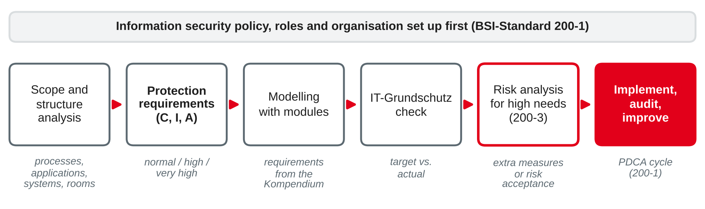
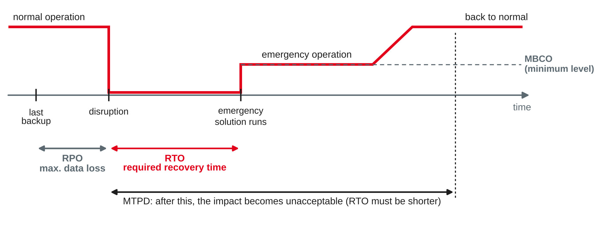

IT Management and EAM
Protection goals · ISO/IEC 27001 and BSI IT-Grundschutz · business continuity management with ISO 22301 · business impact analysis
DHBW · Digital Business Management (Business IT) · Semester 4
You were asked which IT service your training company could not live without for a single day.
Protection goals, ISMS and standards
Confidentiality
Only authorised people can access information, e.g. salary data, customer accounts.
Integrity
Information and systems are correct and complete; unauthorised or accidental changes are prevented or detected, e.g. fares, bank details.
Availability
Information and systems can be used when they are needed, e.g. the ticket device at 6:00.
Extended goals (often treated as aspects of integrity): authenticity (the sender or source is genuine), accountability (actions can be traced to a person), non-repudiation (nobody can deny an action later).
Own wording based on BSI (2017a) and ISO/IEC (2022a).
An information security management system (ISMS) is the set of policies, processes, roles and resources with which management sets security objectives, manages information security risks and continually improves security — not a tool and not a project.
Typical building blocks
Plan–do–check–act
Own wording based on ISO/IEC (2022a) and BSI (2017a).
| Clause | Topic | What the organisation must do (examples) |
|---|---|---|
| 4 | Context | Determine internal and external issues, interested parties, the scope of the ISMS |
| 5 | Leadership | Top management commitment, security policy, roles and responsibilities |
| 6 | Planning | Risk assessment and risk treatment, statement of applicability, security objectives |
| 7 | Support | Resources, competence, awareness, communication, documented information |
| 8 | Operation | Carry out the risk assessments and the treatment plan |
| 9 | Performance evaluation | Monitoring and measurement, internal audit, management review |
| 10 | Improvement | Nonconformities, corrective action, continual improvement |
Own summary based on ISO/IEC (2022a, 2024).
| Theme | Controls | Own examples |
|---|---|---|
| Organisational | 37 | Security policies, asset inventory, supplier relationships, incident management, ICT readiness for business continuity |
| People | 8 | Screening, awareness and training, confidentiality agreements, remote working |
| Physical | 14 | Secure areas, access to buildings, protection of equipment, clear desk |
| Technological | 34 | Access rights, malware protection, backup, logging, cryptography, secure development |
Statement of applicability (SoA): for every Annex A control, the organisation states whether it applies, why, and whether it is implemented. ISO/IEC 27002 gives guidance on how to implement the controls.
Own summary based on ISO/IEC (2022a, 2022b).
ISO/IEC (2022a, 2022b, 2024, 2026).
| Document | Content |
|---|---|
| BSI-Standard 200-1 | Requirements for an ISMS, compatible with ISO/IEC 27001 |
| BSI-Standard 200-2 | IT-Grundschutz methodology: how to build an ISMS step by step |
| BSI-Standard 200-3 | Risk analysis based on IT-Grundschutz, using a catalogue of elementary threats |
| BSI-Standard 200-4 | Business continuity management (2023) |
| IT-Grundschutz-Kompendium | Modules ("Bausteine") with security requirements, e.g. for servers, e-mail, offices, ISMS |
Three approaches in 200-2: basic protection (quick start), standard protection (full method, basis for certification), core protection (start with the "crown jewels").
Own summary based on BSI (2017a, 2017b, 2017c, 2023a, 2023b).

Protection requirements per protection goal: normal, high, very high. A system inherits the highest need of the processes and applications that depend on it (maximum principle).
Own illustration based on BSI (2017b).
BSI (2026).
| ISO/IEC 27001 | BSI IT-Grundschutz | |
|---|---|---|
| Origin | International standard | German federal office (BSI) |
| Approach | Risk-based: own risk assessment, then select controls | Standard requirements for typical objects; own risk analysis only for high needs |
| Level of detail | Generic controls | Very concrete requirements per module |
| Cost of the documents | Paid | Free of charge |
| Certificate | ISO/IEC 27001 by accredited bodies | ISO/IEC 27001 on the basis of IT-Grundschutz (BSI) |
| Typical users | International companies, IT service providers | German public sector, medium-sized firms, KRITIS operators |
Own comparison based on ISO/IEC (2022a) and BSI (2017a, 2017b).
Rate the protection requirements of these objects at Rhein-Neckar Mobil Group for confidentiality, integrity and availability (normal / high / very high). Justify one rating per object.
| NIS2 Art. 21 measure (session 7) | Covered today by |
|---|---|
| Risk analysis and security policies | ISMS: ISO/IEC 27001 clauses 5–6, BSI 200-1 to 200-3 |
| Incident handling | Annex A organisational controls; ITIL incident management (session 6) |
| Business continuity, backup, disaster recovery, crisis management | BCM with ISO 22301 or BSI 200-4 — next section |
| Supply chain security | Annex A supplier controls; supplier management (session 15) |
| Cryptography, access control, MFA, training | Annex A technological and people controls; Kompendium modules |
Own mapping based on Directive (EU) 2022/2555 and ISO/IEC (2022a).
Keeping the business running when things go wrong
Three levels of events
What BCM adds
Own wording based on BSI (2023a) and ISO (2019).
ISO 22301:2019 (+ Amd 1:2024)
BSI-Standard 200-4 (2023)
Own summary based on ISO (2019, 2024) and BSI (2023a).
A business impact analysis examines how the impact of a disruption of business processes develops over time, in order to decide which processes are time-critical and how fast they — and the resources they need — must be recovered.
Own wording based on ISO (2019) and BSI (2023a).

| Term (ISO) | BSI-Standard 200-4 (German) | Question |
|---|---|---|
| MTPD maximum tolerable period of disruption | MTA, maximal tolerierbare Ausfallzeit | When is it unacceptable? |
| RTO recovery time objective | WAZ, geforderte Wiederanlaufzeit | When must the fallback run? |
| RPO recovery point objective | maximal zulässiger Datenverlust | How much data may be lost? |
| MBCO minimum business continuity objective | Notbetriebsniveau | What minimum level is enough? |
Own illustration based on ISO (2019, 2025) and BSI (2023a).
Continuity strategies and solutions
Plans and exercises
Own summary based on ISO (2019), BSI (2023a) and Tiemeyer (2023).
Case: Rhein-Neckar Mobil Group (sessions 3–7), on-board ticketing service: 400 buses and the regional trains, operation daily 4:30–0:30. Ticket devices keep fares locally and upload sales every 15 minutes to the fare back-end; card payments go via an external payment provider; sales data feed the revenue sharing with the regional transport association once a month.
Business processes to analyse:
Preparation: think of a piece of software you use at work that annoys you. What exactly is wrong with its quality — and how would you measure it?
Diagrams in this deck are own illustrations. Standards are described in own words.